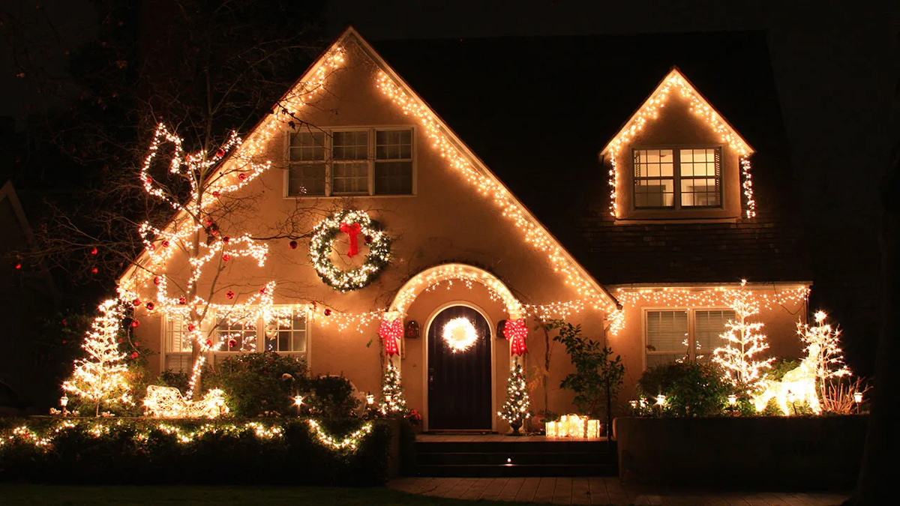

SHARE
Christmas, Hanukkah, and Kwanzaa are fast approaching. Before you know it, it’ll be time for family reunions and traditional festivities. Whether you’re planning on decking out your home with a lightning display or simply want an easier control system, here are some ideas to lighten your load.
Holiday decorating has come a long way from tangled strings of incandescent bulbs and manual timers. With today’s smart technology, you can create dazzling, synchronized light displays that are easier to manage, more energy-efficient, and far more customizable than ever before. Whether you want a subtle glow or a neighborhood showstopper, here’s how to bring your holiday lighting into the smart era.
1. Start with Smart Lights
The foundation of any smart display is, of course, the lights themselves. Smart LED light strands and bulbs allow you to control brightness, color, and patterns directly from your phone.
Look for features like:
- • App control (iOS or Android)
- • Millions of color options
- • Pre-programmed scenes and animations
- • Music synchronization
Some systems even let you map lights to specific areas of your home, so your roofline, trees, and pathways can all behave differently in one coordinated display.
2. Use a Smart Plug for Existing Decorations
If you already have traditional holiday lights or decorations, you don’t need to replace everything. Smart plugs can instantly upgrade “dumb” devices.
With a smart plug, you can:
- • Turn decorations on/off remotely
- • Set schedules (e.g., sunset to midnight)
- • Control everything with voice assistants
This is one of the easiest and most affordable ways to dip your toe into smart decorating.
3. Automate with Schedules and Routines
One of the biggest advantages of smart tech is automation. Instead of remembering to flip switches every night, you can set routines.
Examples:
- • Lights turn on automatically at sunset
- • Displays shut off at bedtime to save energy
- • Weekend schedules run longer than weekday ones
You can also create themed routines—like a “Holiday Party Mode” that activates brighter, animated lighting with a single tap.

Lights Display for a Client in Brookhaven, GA
4. Sync Lights with Music
Want to take your display to the next level? Sync your lights to music.
Some smart lighting systems include built-in microphones or integrations that allow lights to pulse, fade, and change colors in time with your favorite holiday songs. For more advanced setups, you can choreograph entire shows using sequencing software.
Tip: If you go this route, be mindful of neighbors—keep volume reasonable and set time limits.
5. Integrate Voice Control
Pair your lights with a voice assistant to make control effortless.
You can say things like:
- • “Turn on the holiday lights”
- • “Set lights to red and green”
- • “Dim outdoor lights to 50%”
Voice control is especially helpful when your hands are full—or when you just want to show off your setup to guests.
6. Group and Zone Your Display
Smart systems allow you to organize lights into zones:
- • Roofline
- • Front yard trees
- • Walkway/path lights
- • Indoor decorations
Grouping let you control multiple elements at once or customize each area individually. For example, you might keep indoor lights warm and steady while outdoor lights run colorful animations.
Lights Display for a Restaurant in Blue Ridge, GA
7. Monitor Energy Usage
Smart holiday lighting isn’t just about looks—it can also help you save energy.
Many apps provide insights into power usage, helping you:
- • Identify energy-heavy setups
- • Adjust schedules to reduce waste
- • Switch to more efficient LED options
Compared to older incandescent bulbs, smart LEDs can dramatically cut your electricity bill during the season.
8. Secure Your Setup
Because smart devices connect to your home network, it’s important to keep things secure:
- • Use strong Wi-Fi passwords
- • Keep device firmware updated
- • Buy from reputable brands
This ensures your festive setup doesn’t become a weak point in your home’s security.
9. Plan Your Design Before You Install
Before climbing ladders or stringing lights, map out your display:
- • Decide focal points (roofline, trees, entryway)
- • Choose a color theme
- • Plan power access and Wi-Fi coverage
A little planning goes a long way toward creating a cohesive, polished look.
Smart technology transforms holiday decorating. But this creative experience could easily turn into a chore for you. With our expertise, we can build a display that reflects your style—whether that’s elegant and minimal or bold and animated.
Let Oracle handle everything—from design and installation to smart automation and maintenance—so you can enjoy the magic without lifting a finger.